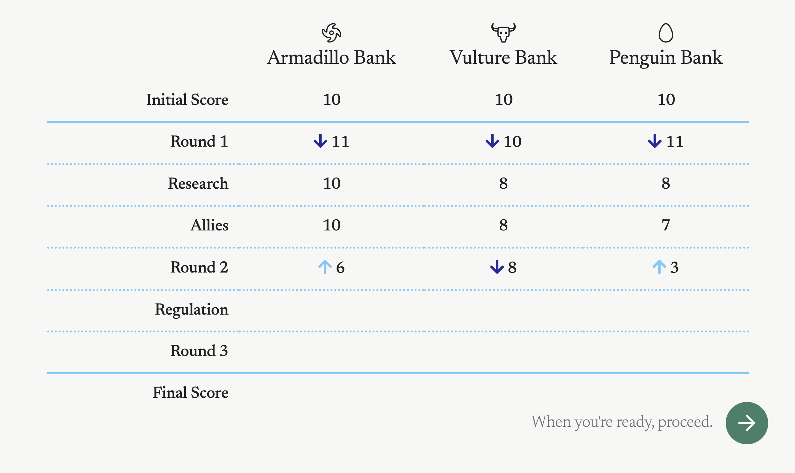
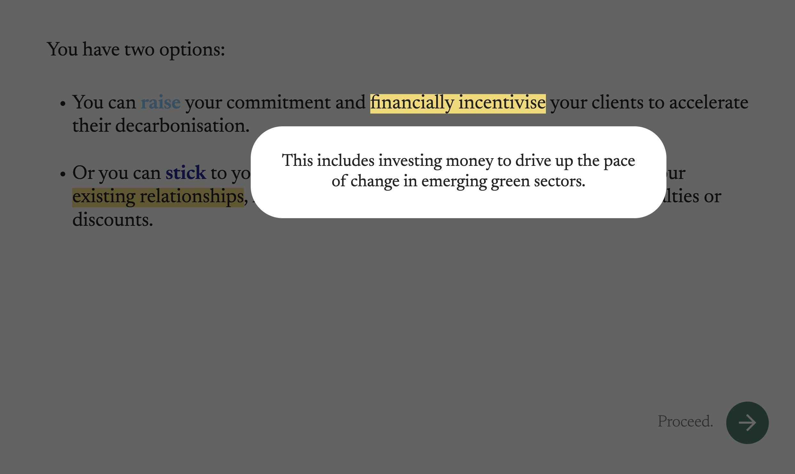
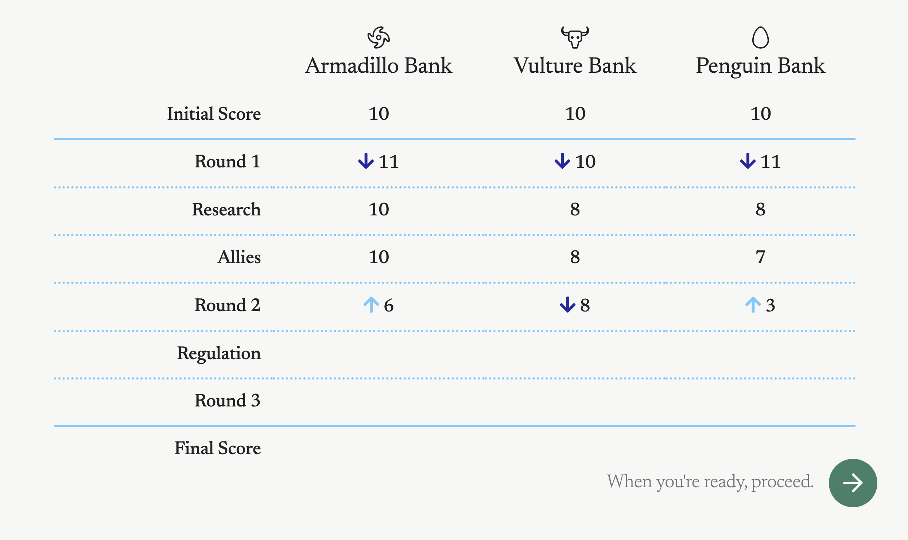
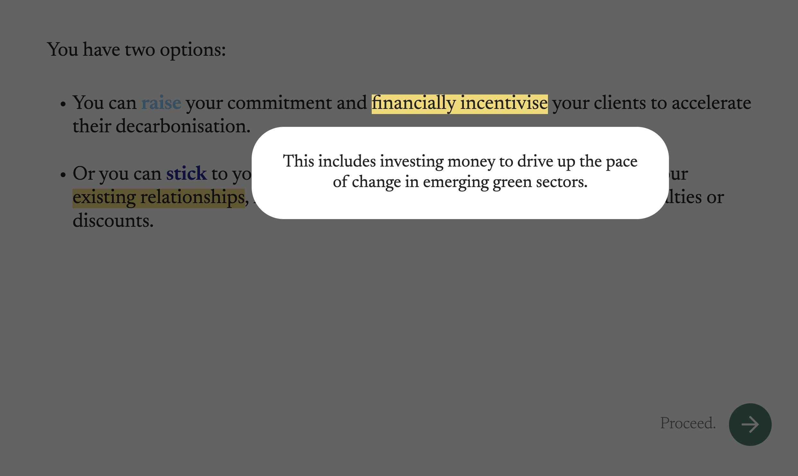

The Pledge
Simulation game, May 2021
The Pledge is multi-stakeholder simulation about sustainable finance and the challenges and opportunities that banks face in the transition to net zero.
Made in collaboration with David Finnigan and commissioned by Climate Safe Lending, an international collaborative network dedicated to accelerating the decarbonization of the banking sector.
We set out to illustrate several key dynamics of the sustainable finance transition, including:
- Shareholder activism
- Lobbying and government regulation
- Measuring scope 1, 2 and 3 emissions
- Measuring scope 1, 2 and 3 emissions
- Corporate clients
- Internal bank dynamics
- NGOs and activists
The Pledge was launched as part of Climate Safe Lending’s May 2021 workshop for 60 participants from banks, regulators and NGOs.
“By helping us think through the complex challenges of the financial system’s net zero transition, games and interactive models can help us navigate a journey through the choppy waters of the coming decades.”
– David Finnigan